下载 v0.2.0
cyrio-tauri_v0.2.0_macos-arm64.dmg
macOS Apple Silicon (M1/M2/M3)
9.8 MB
下载
cyrio-tauri_v0.2.0_macos-x86_64.dmg
macOS Intel
9.5 MB
下载
cyrio-tauri_v0.2.0_windows-x86_64.exe
Windows x86_64
20 MB
下载
cyrio-tauri_v0.2.0_linux-x86_64
Linux x86_64
17 MB
下载
cyrio_v0.2.0_arm64-v8a.apk
Android arm64
4.5 MB
下载
截图
桌面端
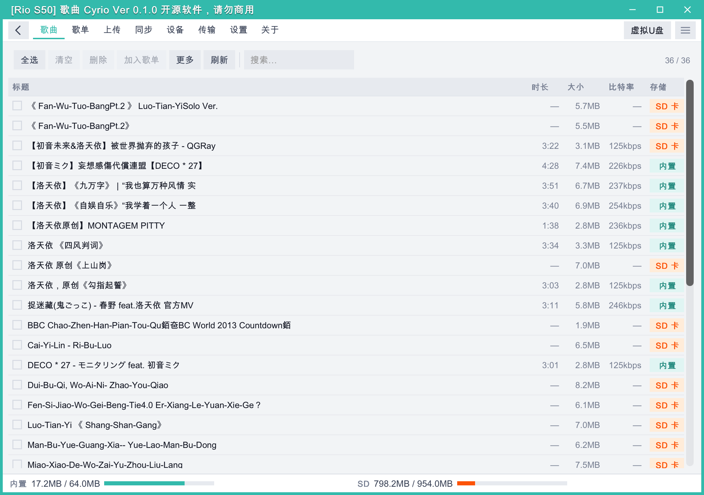
歌曲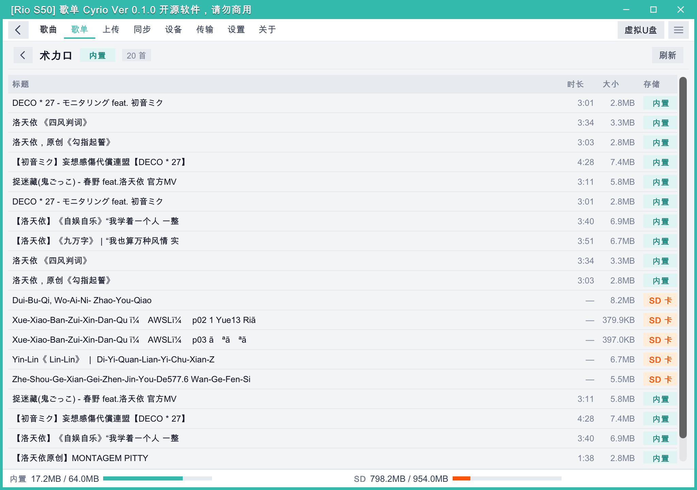
歌单列表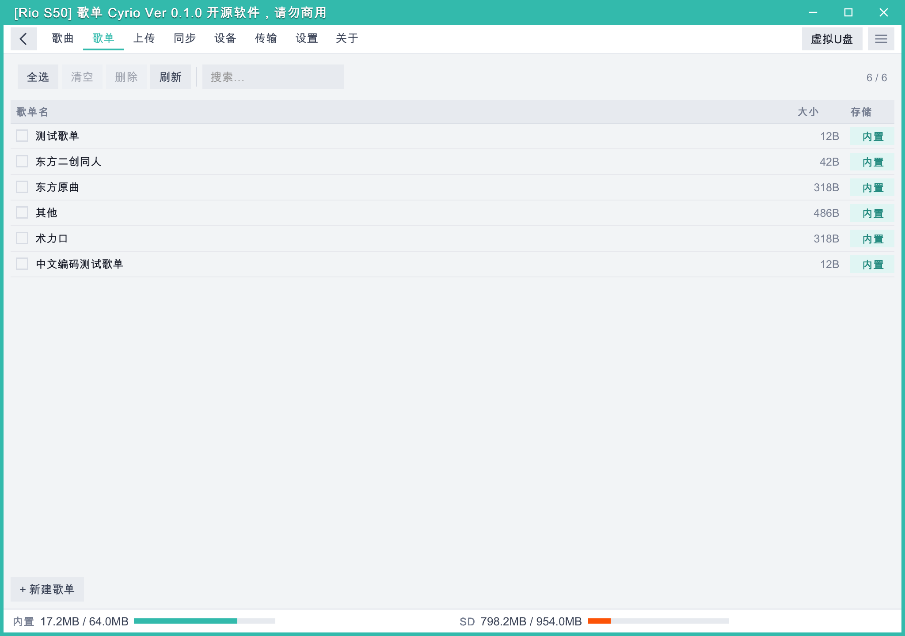
歌单详情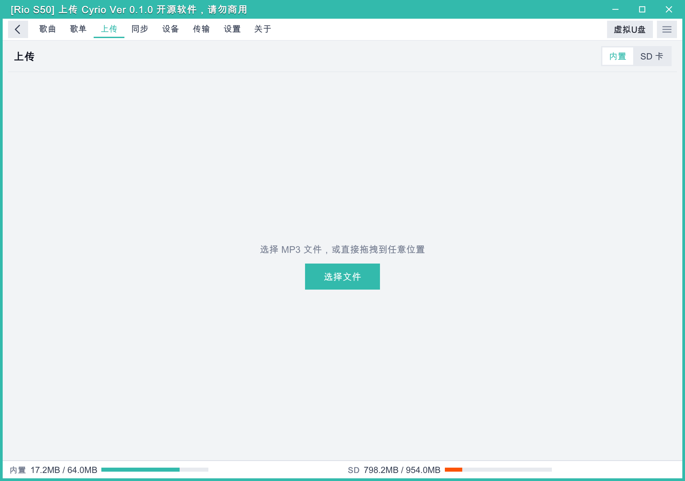
上传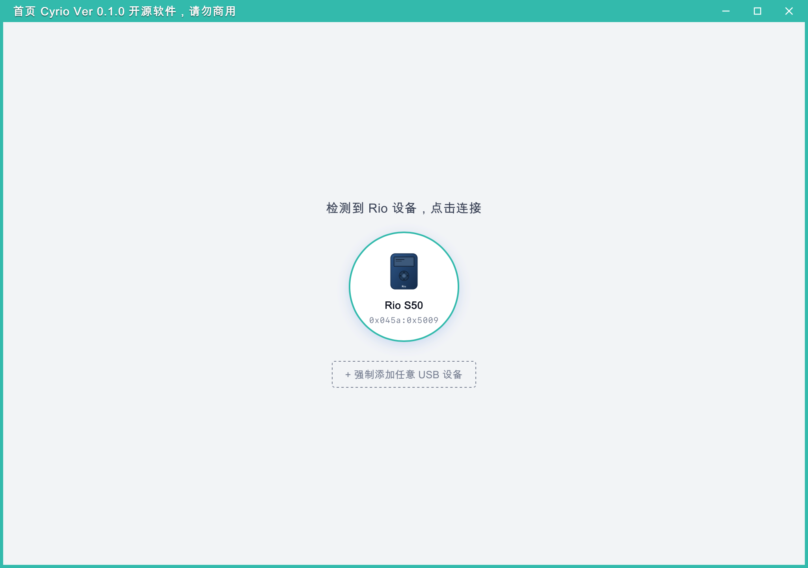
设备连接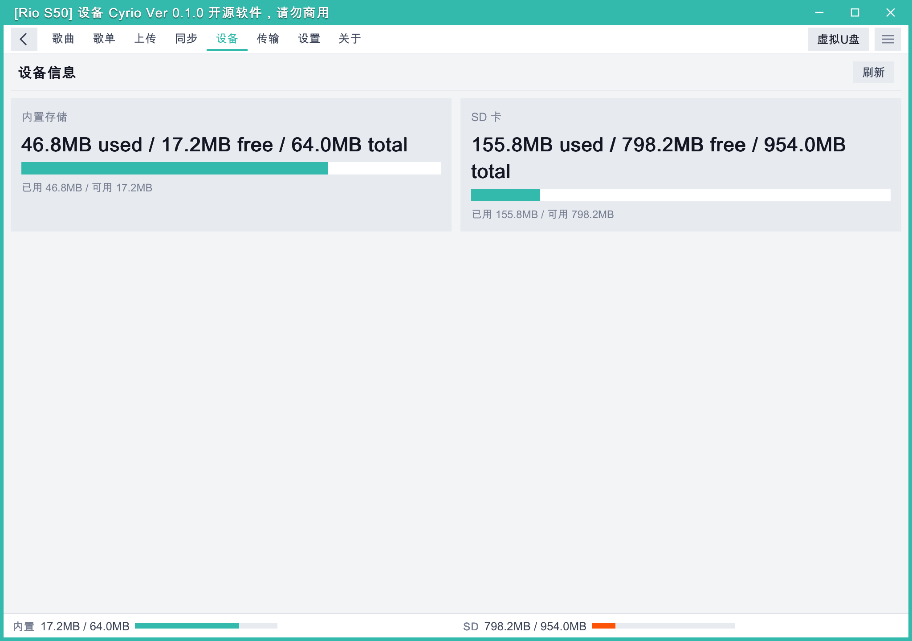
设备信息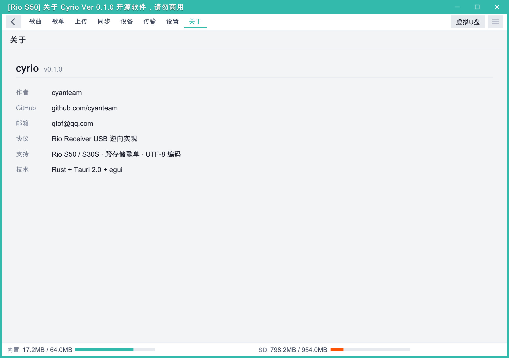
关于Android 端
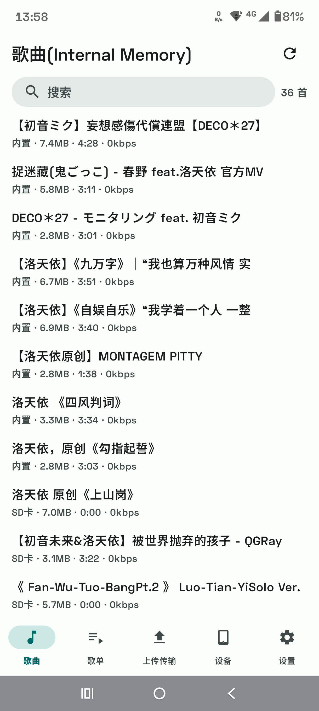
歌曲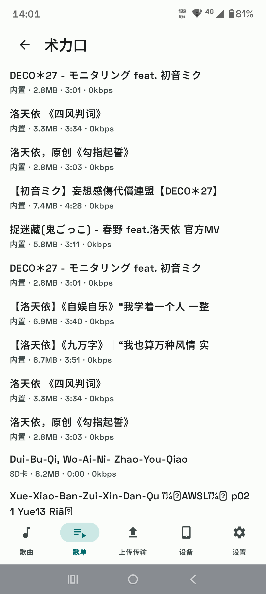
歌单列表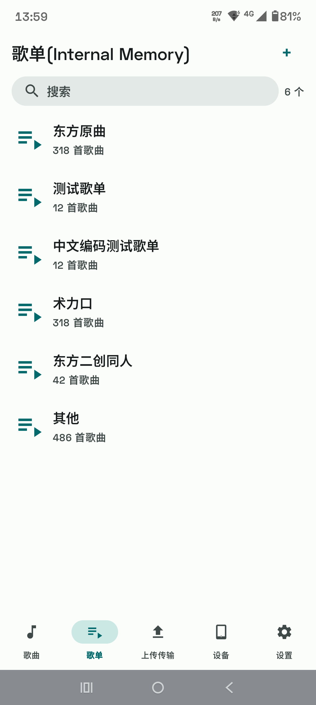
歌单详情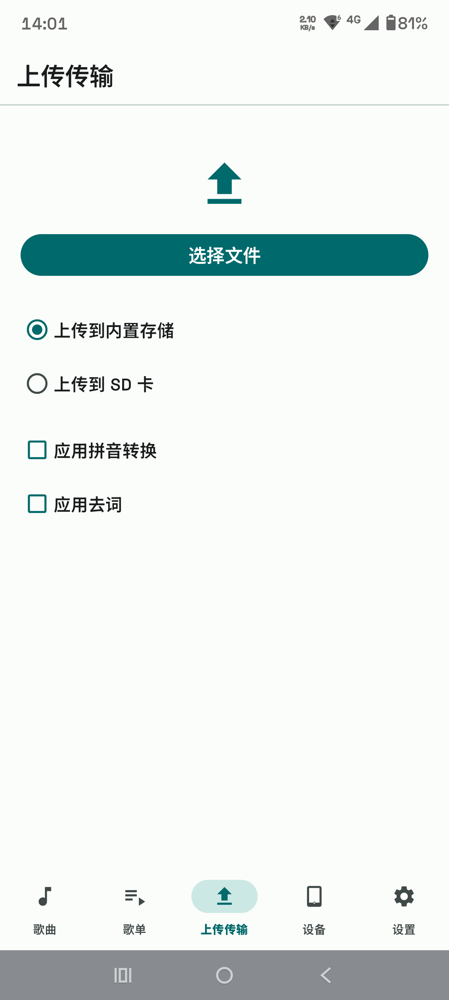
上传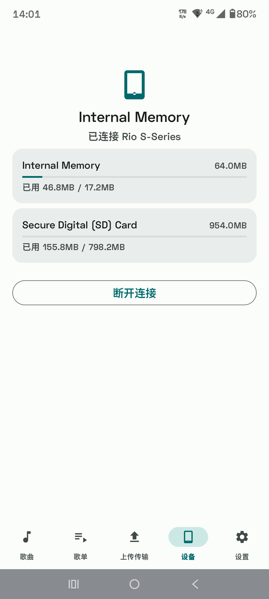
设备信息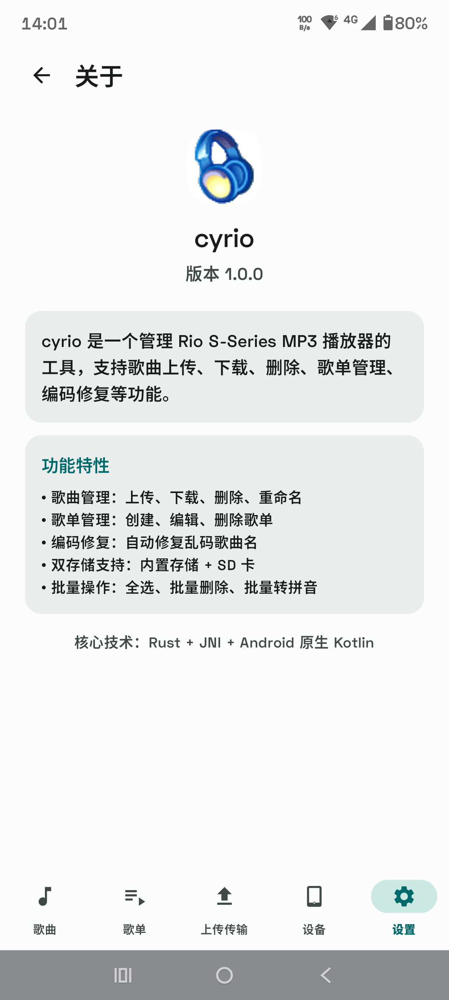
关于软件优势
- 告别老旧驱动 — 无需 32 位电脑、无需帝盟官方驱动，现代设备即插即用
- 全平台覆盖 — macOS / Windows / Linux / Android，同一套 Rust 核心
- 纯 Rust 实现 — 从 USB 协议到音频播放，全部 Rust 原生编写
- WebDAV 虚拟U盘 — 将 Rio 设备映射为网络磁盘，拖拽传曲
- 批量管理 — 批量上传 / 删除 / 转拼音 / 去词 / 修复编码
- 歌单管理 — 创建、编辑、查看歌单
- 内置播放试听 — 双击即可试听，无需导出
- 双存储支持 — 内置存储 + SD 卡
- 演示模式 — 无需设备即可预览全部功能